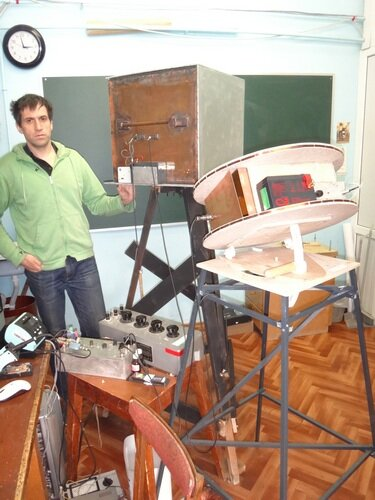

Как услышать "пение" ядер
Когда я учился на третьем курсе физфака и уже определился с выбором кафедры (приглянулась кафедра квантовых магнитных явлений) у нас раз в неделю проводился семинар по теории проектирования ЯМР-устройств. Для многих это довольно скучная тема, где много электронных схем, формул, технических решений. Но я был знаком с радиоэлектроникой, увлекался в школе, в классе пятом, собирал мигалки пищалки и даже спаял приёмник прямого усиления, который иногда работал. Поэтому на этих семинарах мне было что вспомнить и почерпнуть новое.
Осциллограмма ЯМР-сигнала от протонов воды
Как-то зашла речь о ЯМР в земном магнитном поле. Меня увлекла идея простого прибора, с помощью которого можно не просто наблюдать ЯМР-сигнал на осциллографе, но и, подключив на выход прибора усилитель с колонкой, реально услышать этот сигнал. Фактически этот сигнал формируется релаксирующими в магнитном поле земли ядрами вещества, из которого состоит исследуемый образец. В ЯМР в земном поле в качестве пробного образца чаще всего служит обычная вода, в которой специальным слабым электромагнитным импульсом возбуждаются ядра водорода (протоны). Релаксация протонов после возбуждения и наводит сигнал в приёмной катушке приёмника.
Идея проста: генератор создаёт импульс, сигнал с катушки усиливается и подаётся на динамик. Есть маленькие нюансы: надо рассчитать приёмную катушку, которая включена в резонансный контур, коэффициент усиления для усилителя и т. п. Я так загорелся идеей создать свой собственный прибор прямо в комнате общежития и уже начал рассчитывать приёмную катушку, пришел к семинаристу Юрию Сергеевичу Чернышёву за советом, как правильно всё рассчитать. Тут он мне всё рубит: "А у тебя ничего не выйдет!" Я даже впал в ступор... "Почему?" - спрашиваю. "Ну, во-первых, очень сильные помехи в обычной комнате. Во-вторых, нужно очень однородное магнитное поле, а в жилом доме с железобетоном и находящимися в нём железосодержащими предметами быта, земное поле становится очень неоднородным. В-третьих, предварительный усилитель специальный нужен малошумящий, кроме того, необходимо делать предварительную поляризацию образца..." и т. д. Всплыло столько тонкостей, что у меня опустились руки...

Ваш покорный слуга в лаборатории
Тем не менее, спустя два года, я уже получал ЯМР-сигнал в земном поле в своей лаборатории, где было очень много полей и было очень неоднородное поле. И, конечно, построил я свой собственный прибор не без помощи Юрия Сергеевича и многих других своих учителей, за что им огромное спасибо! Мораль сей басни: было бы желание, а ученье и труд всё перетрут! Дерзайте, и у вас всё получится!